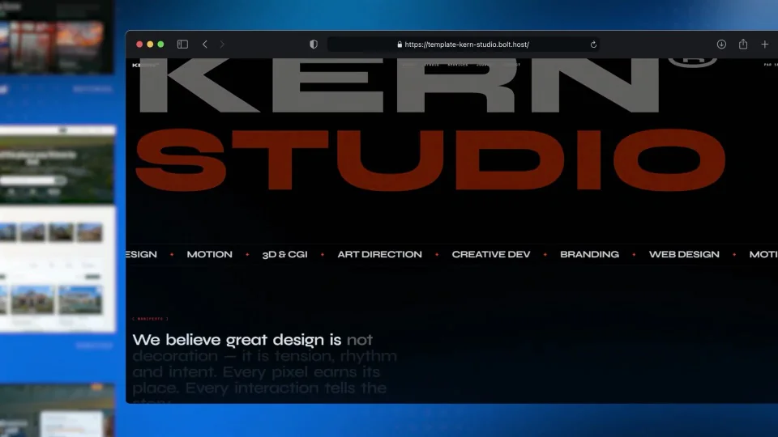
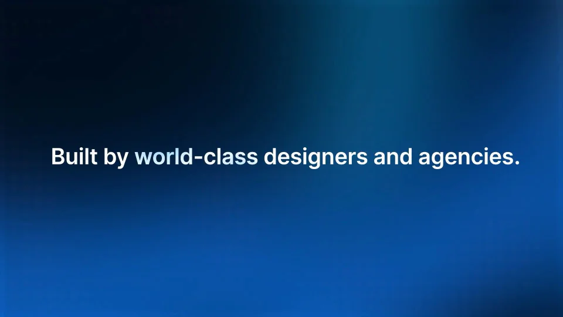
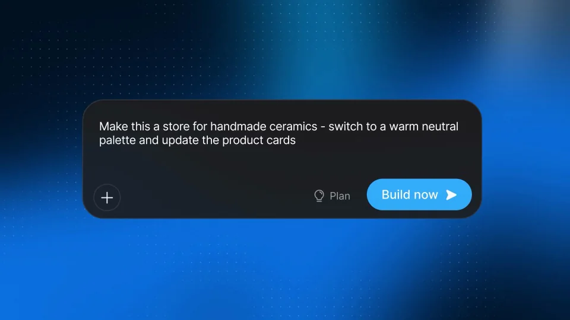

Bolt / V373
Bolt Template Marketplace｜模板市场
先展示可选模板的范围，再放大一个能浏览的完整网站，最后用提示词把模板改成另一个业务。
构图与编排 可播放 · 可替换内容
整体编排规则示例
查看 HTML 源码
<!doctype html><html lang="zh-CN"><meta charset="utf-8"><meta name="viewport" content="width=device-width,initial-scale=1"><title>Bolt Template Marketplace｜模板市场 · sequence</title><style>html,body{margin:0;width:100%;height:100%;overflow:hidden;background:#061325}canvas{display:block;width:100%;height:100%;object-fit:contain}</style><body data-mode="sequence"><canvas width="1000" height="600"></canvas><script src="data.js"></script><script src="common.js"></script><script src="scene.js"></script><script src="bridge.js"></script></body></html>画面元素模板矩阵透视带选中网页类别标签修改输入前后结果
MOTION LANGUAGE
动作与构图
局部动作 · 构图规则
01
矩阵负责选择，单页负责证明
矩阵负责选择，单页负责证明规则示例
查看 HTML 源码
<!doctype html><html lang="zh-CN"><meta charset="utf-8"><meta name="viewport" content="width=device-width,initial-scale=1"><title>Bolt Template Marketplace｜模板市场 · sequence</title><style>html,body{margin:0;width:100%;height:100%;overflow:hidden;background:#061325}canvas{display:block;width:100%;height:100%;object-fit:contain}</style><body data-mode="clip" data-start="3" data-end="12"><canvas width="1000" height="600"></canvas><script src="data.js"></script><script src="common.js"></script><script src="scene.js"></script><script src="bridge.js"></script></body></html>蓝黑光场里排列多张完整网页缩略图，间距统一。选中模板从网格所在位置放大，其他页面退后；浏览期间保留网页内部的纵向移动。
02
改造前后保留版式对应
展示修改需求后，把同一网页的题材、色板和图片换掉。保留关键区域位置，使观众能看出改了什么；修改框用深色面板，与白色网页形成对照。
03
不要让模板数量压过选中的作品
开始和结尾可以展示多模板，中段只深入一个。品牌背景以深蓝、亮蓝与白色为主，模板内容可多彩但不改外部统一框架。
04
换主题准备一组可比较素材
至少提供三类模板及一个完整改造案例。新主题文案、图像与主色成套替换，结尾保留简短行动入口。
SEQUENCE
段落与节奏
点击段落，定位到上方编排示意。



画面参考 · 离散静帧
KEEP THE RELATIONSHIPS
制作其他主题
- 保留集合→单例→改造→结果；替换模板类别和业务案例。
制作约束
模板矩阵 / 透视带 / 选中网页 / 类别标签 / 修改输入 / 前后结果
- 蓝黑光场里排列多张完整网页缩略图，间距统一。选中模板从网格所在位置放大，其他页面退后；浏览期间保留网页内部的纵向移动。
- 展示修改需求后，把同一网页的题材、色板和图片换掉。保留关键区域位置，使观众能看出改了什么；修改框用深色面板，与白色网页形成对照。
- 开始和结尾可以展示多模板，中段只深入一个。品牌背景以深蓝、亮蓝与白色为主，模板内容可多彩但不改外部统一框架。
- 至少提供三类模板及一个完整改造案例。新主题文案、图像与主色成套替换，结尾保留简短行动入口。